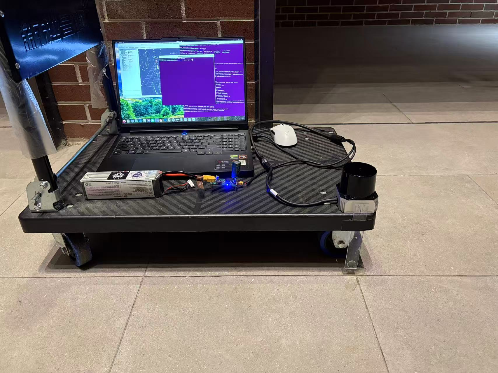
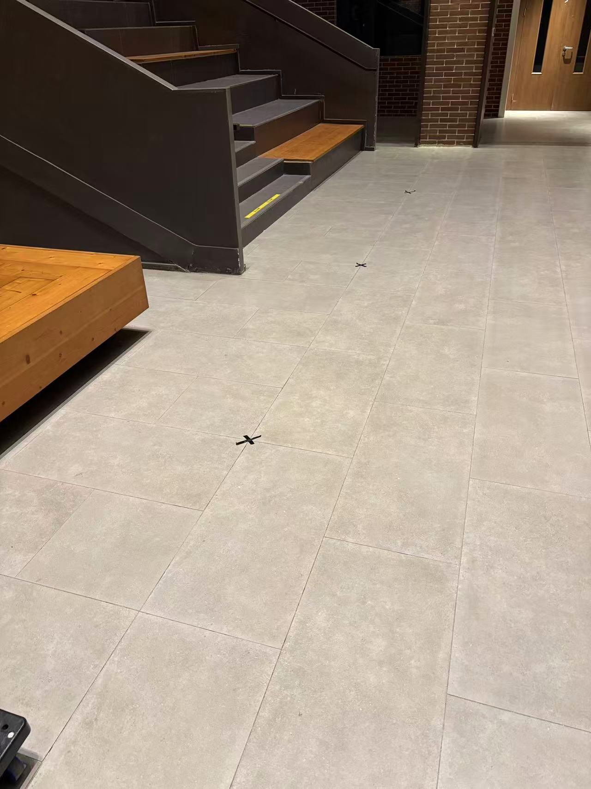
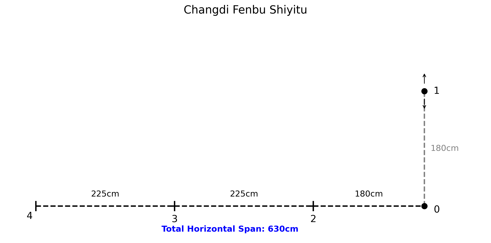

数据集与两颗雷达的对比
同一套采集流程、同一块场地、同样的四个算法，测了 Livox MID-360s 和 SKYLANDX C01。 下面实测数字都是从 bag 里直接量出来的
俯仰 −7° ~ +52° · 200k pts/s · 盲区 10 cm
适合：快速上手、高层高场景、嵌入式实时
俯仰 −20° ~ +45° · 216k pts/s · 盲区 5 cm
短板：跑不满实时、供电下限 12 V、生态较新
1. 下载
数据托管在 Google 网盘。
| 包名 | 雷达 | 场地 | 走法 | 时长 | 大小 | 单独下载 |
|---|---|---|---|---|---|---|
01_1 | MID-360s | 老场地 | 0-1-2-3-4-0 | 212.1 s | 1.05 GiB | 下载 |
01_2 | MID-360s | 老场地 | 0-1-2-3-4-0（第 2 次） | 251.4 s | 1.24 GiB | 下载 |
02_1 | MID-360s | 老场地 | 0-2-3-4-1-0 | 240.3 s | 1.19 GiB | 下载 |
02_2 | MID-360s | 老场地 | 0-2-3-4-1-0（第 2 次） | 224.5 s | 1.11 GiB | 下载 |
03_01 | C01 | 新场地 | 0-1-2-3-4-5-0 | 193.9 s | 1.03 GiB | 下载 |
03_02 | C01 | 新场地 | 0-5-4-3-2-1-0（反向） | 234.7 s | 1.25 GiB | 下载 |
04_01 | C01 | 老场地 | 0-2-3-4-1-0 | 158.6 s | 0.85 GiB | 下载 |
04_02 | C01 | 老场地 | 0-1-2-3-4-0 | 136.5 s | 0.73 GiB | 下载 |
2. 规格对照
两颗雷达都是 905 nm / Class 1 / 非重复扫描 / 内置 200 Hz IMU， 都走 UDP + Livox SDK2 协议。差别集中在视场、点率和供电。
| 项 | Livox MID-360s | SKYLANDX C01 | 差异影响 |
|---|---|---|---|
| 激光波长 / 人眼安全 | 905 nm / Class 1 | 905 nm / Class 1 | 相同 |
| 测距 | 40 m @10% 反射率 70 m @80% |
40 m @10% 反射率 70 m @80% |
相同 |
| 近处盲区 | 0.1 m | 0.05 m | C01 胜 能贴得更近，适合贴地 / 贴墙 |
| 垂直视场角 | 59° （−7° ~ +52°） |
65° （−20° ~ +45°） |
C01 下视胜
往下多看 13°，脚下地形信息多很多； 但上方少 7°，高处的货架 / 天花板覆盖变少 |
| 点率 | 200 000 pts/s | 216 000 pts/s（双线） 108 000（单线） |
C01 胜 每帧多 8% |
| 角分辨率 | 0.2°（水平） | 0.15° 水平 / 0.36° 垂直 | C01 胜 水平更细 |
| 扫描方式 | 非重复 | 非重复（3 轴） | 相同 |
| 帧率 / IMU | 10 Hz / 200 Hz | 10 Hz（最高 30 Hz）/ 200 Hz | 相同 |
| 工作电压 | 9 ~ 27 V | 12 ~ 30 V DC | C01 劣势 下限更高， 原来喂 MID-360 的 9 V 档位可能起不来 |
| 功率 / 防护 | — / IP67 | 最大额定 15 W / IP67 | 同级 空载会明显发热，可用来判断是否上电 |
| 重量 | 265 g | 420 g | C01 劣势 支架承重要够 |
| 尺寸 | 较小 | 73 × 73.75 × 77.8 mm | — |
3. 实测差异：从 bag 里量出来的
规格书上的数字只能参考。真正决定算法表现的是每帧点数和视场覆盖， 这两项可以直接从 bag 里算出来。
| 指标 | MID-360s | C01 |
|---|---|---|
| 每帧点数 | 19 968 ~ 20 064 | 21 600 ~ 21 888 |
| 折算点率 | 200 ~ 201 k pts/s | 215 ~ 219 k pts/s |
| 俯仰角覆盖 | −7.5° ~ +53.5° | −20.3° ~ +44.9° |
| 点云频率 | 10.0 Hz | 10.0 Hz |
| IMU 频率 | 199.7 Hz | 199.7 Hz |
| 点云格式 | sensor_msgs/msg/PointCloud2，
point_step = 26，frame_id = livox_frame |
|
| 每点字段 |
x, y, z（float32）+ intensity（float32）+
line（uint8，0~3）+ timestamp（float64，纳秒）
|
|
| bag 体积 | ≈ 5.3 MB/s | ≈ 5.7 MB/s |
实测俯仰角说明什么
规格书写 MID-360s 是 −7°~+52°、C01 是 −20°~+45°，实测分别是 −7.5°~+53.5° 和 −20.3°~+44.9° —— 两颗都对得上，说明厂商参数可信。
这个差异对算法的实际影响：
- C01 多出的下视角（−20° vs −7°）：脚下 5~10 m 内的地面点变多。 好处是走廊、空旷场地的地面约束更强；坏处是地面点占比升高， 如果算法的体素降采样不区分地面，会浪费算力 —— 这也很可能是 C01 在这台机器上跑不满实时的原因之一。
- MID-360s 多出的上视角（+53° vs +45°）：天花板、高处货架覆盖更好， 在层高较高的室内竖直方向约束更强。老场地（货架仓库）MID-360s 略占优， 可能和这个有关，但样本太少不能下结论。
4. 怎么判断一份 bag 是哪颗雷达录的
- 每帧点数：约 20 000 → MID-360s； 约 21 700 → C01
- 俯仰角范围：−7° ~ +53° → MID-360s； −20° ~ +45° → C01
cd ~/slam_benchmark
/usr/bin/python3 - <<'PY'
import sqlite3, struct, math, glob
for b in ["rosbag/01_1", "rosbag/03_01"]:
db = glob.glob(b + "/*.db3")[0]
con = sqlite3.connect(f"file:{db}?mode=ro", uri=True)
tid = con.execute("select id from topics where name='/livox/lidar'").fetchone()[0]
d, = con.execute("select data from messages where topic_id=? "
"order by timestamp limit 1", (tid,)).fetchone()
ln = struct.unpack_from('<I', d, 12)[0] # frame_id 字符串长度
h, w = struct.unpack_from('<II', d, 16 + ln) # height, width
n = h * w
ps = next(c for c in range(13, 65) if 60 <= len(d) - n * c <= 400)
blob = d[len(d) - 1 - n * ps:][1:] # 跳过 1 字节尾部填充
el = [math.degrees(math.atan2(z, math.hypot(x, y)))
for x, y, z in (struct.unpack_from('<fff', blob, k) for k in range(0, n * ps, ps))
if math.hypot(x, y) > 0.05]
print(f"{b:14s} {n:6d} 点/帧 → {n*10/1000:.0f}k pts/s "
f"俯仰 {min(el):.1f}° ~ {max(el):.1f}°")
con.close()
PY
输出：
rosbag/01_1 20064 点/帧 → 201k pts/s 俯仰 -7.5° ~ 53.5° ← MID-360s rosbag/03_01 21696 点/帧 → 217k pts/s 俯仰 -20.3° ~ 44.9° ← C01
5. 驱动层面：网段不同、驱动可选
C01 复刻了 Livox SDK2 的报文协议，所以它可以用 Livox 的驱动，
也可以用厂商自己的驱动。两条路都能跑，取舍不同。
但这 8 个 bag 全部是用 livox_ros_driver2 录的，格式完全一致，
所以四个算法看到的输入是同一种类型。
5.1 网段不一样，这是最容易踩的坑
| 项 | Livox MID-360s | SKYLANDX C01 |
|---|---|---|
| 主机（PC）IP | 192.168.1.50/24 | 192.168.100.150/24 |
| 雷达 IP | 192.168.1.3 | 192.168.100.200 |
| 命令口 / 点云 / IMU | 56000 / 56300→56301 / 56400→56401（两侧完全相同） | |
| 默认点云话题 | /livox/lidar | /skylandx/lidar（厂商驱动） |
换雷达时 IP 必须一起换。两个网段不互通，
用 MID-360s 的 192.168.1.3 去找 C01 会一直 rx_packets=0，
而 ip link 显示 carrier=1 看起来一切正常。
部分批次的 C01 固件把目的 MAC 硬编码成 11:22:33:44:55:66，
只发到这个 MAC，不看 ARP。网卡 MAC 不是这个值时，包在二层就被丢了：
link up、ip a 正常，但 rx_packets 一直是 0。
官方驱动带了一个脚本能一键处理（改网卡 MAC 或开混杂模式）：
sudo bash tool/setup_lidar_net.sh <网卡名> 192.168.100.150
5.2 两种驱动怎么选
| 项 | livox_ros_driver2（本项目用的） | 厂商 Skylandx_ros_driver |
|---|---|---|
| 话题 | /livox/lidar /livox/imu |
/skylandx/lidar /skylandx/imu |
| frame_id | livox_frame | skylandx_frame |
| 点结构 | point_step = 26，带 tag/line |
point_step = 24，无 tag/line，无效点已滤掉 |
| 时间戳 | float64 纳秒 | float64 秒 |
| IMU 加速度单位 | g（模长 ≈ 1.0） | m/s²（×9.81） |
| 四个算法兼容性 | 四个都已跑通，是本项目的基准 | 要改 acc_scale（GLIM 9.80665 → 1.0）等参数，未验证 |
建议：想跟本项目的精度数字对比，就继续用 livox_ros_driver2，
这样 bag 格式和算法配置都不需要改。想用厂商驱动的额外功能（D03 支持、
内置的无效点过滤）再切，切过去记得核对时间戳单位和 IMU 单位。
5.3 用 livox_ros_driver2 时要改哪几行
只有三处：段名（跟设备类型对应）、雷达 IP、PC 侧 IP。
{
"lidar_summary_info": { "lidar_type": 8 },
"MID360": { // ← 段名必须和设备类型对应，否则包被静默丢弃
"lidar_net_info": { ... }, // 雷达侧端口
"host_net_info": { ... } // PC 侧端口 = 雷达侧 + 1
},
"lidar_configs": [
{ "ip": "192.168.1.3", // ← MID-360s 填这个
"pcl_data_type": 1,
"pattern_mode": 0,
"extrinsic_parameter": { ... } }
]
}
| 雷达 | lidar_configs[0].ip | host_net_info 里的 IP |
|---|---|---|
| Livox MID-360s | 192.168.1.3 | 192.168.1.50 |
| SKYLANDX C01 | 192.168.100.200 | 192.168.100.150 |
SDK 在 device_manager.cpp 里直接返回：
if (type_lidars_cfg_map_.find(detection_data->dev_type) ==
type_lidars_cfg_map_.end()) {
return; // ← 直接返回，日志里看不出任何异常
}
现象是：日志停在 Init lds lidar success! 然后一片死寂，
ros2 topic list 里没有 /livox/lidar，一句报错都没有。
这个坑我们排查了很久。
改完必须同步到 install/（驱动读的是那里的副本，改 src/ 不生效）：
cp ~/livox_ws/src/livox_ros_driver2/config/MID360_config.json \ ~/livox_ws/install/livox_ros_driver2/share/livox_ros_driver2/config/
或者让仓库里的脚本代劳（写雷达 IP + 写 PC 侧 IP + 同步到 install，三步一次做完）：
# MID-360s
bash scripts/02_get_livox.sh --lidar-ip 192.168.1.3 --device mid360s
# C01（网段不一样，主机 IP 也要给）
bash scripts/02_get_livox.sh --lidar-ip 192.168.100.200 \
--host-ip 192.168.100.150 --net
6. IMU↔LiDAR 外参（两颗雷达都已确认）
这一项比前面所有差异都更影响结果。两颗雷达现在都有确定值了， 但要注意它们在坐标系的定义上是同一种写法，换算到不同算法时符号要变。
6.1 官方值
两家的手册给的都是同一个量 —— IMU 在 LiDAR 坐标系下的位置：
| 雷达 | 来源 | IMU 在 LiDAR 系下的位置 (mm) |
|---|---|---|
| Livox MID-360s | Livox 手册 §3.5 出厂标定 | (11.0, 23.29, −44.12) |
| SKYLANDX C01 | 官方 ROS2 驱动 README.zh-CN.md（标注「参考值」） |
(18.90, 24.64, −53.5) |
两者轴向都假设与点云坐标系一致，所以旋转部分是单位阵，只需要平移。 C01 的偏移量比 MID-360s 大一圈（尤其 Z 向多了 9.4 mm）—— 用 MID-360s 的值替身会带来约 1 cm 量级的外参误差。
6.2 换算到四个算法
关键区别在符号。GLIM 的 T_lidar_imu 直接就是上表的值；
另外三个算法（FAST-LIO2 / Point-LIO / LIO-SAM）的代码都是
point_imu = R · point_lidar + T，
所以 T 要填上表值取负（LiDAR 原点在 IMU 系下的位置）。
| 算法 | 参数名 | MID-360s 填什么 | C01 填什么 |
|---|---|---|---|
| GLIM | T_lidar_imu |
[0.011, 0.02329, -0.04412, 0, 0, 0, 1] |
[0.0189, 0.02464, -0.0535, 0, 0, 0, 1] |
| FAST-LIO2 | extrinsic_T |
[-0.011, -0.02329, 0.04412] |
[-0.0189, -0.02464, 0.0535] |
| Point-LIO | extrinsic_T |
[-0.011, -0.02329, 0.04412] |
[-0.0189, -0.02464, 0.0535] |
| LIO-SAM | extrinsicTrans |
[-0.011, -0.02329, 0.04412] |
[-0.0189, -0.02464, 0.0535] |
但 第 7 节的结果表是按旧外参跑出来的
（C01 当时借用了 MID-360s 的值，LIO-SAM 当时还是 [0,0,0]）。
所以表里的 C01 数字仍含外参误差，重跑之后会更准。
6.3 各算法对错误外参的敏感度
| 算法 | 敏感度 | 原因 |
|---|---|---|
| FAST-LIO2 | 影响最小 | 开着在线外参估计（extrinsic_est_en: true），
会自己往正确方向收敛。C01 老场地上反而比 MID-360s 更准（0.39~1.77 cm vs 1.90 cm 平均） |
| GLIM | 影响最明显 | 外参不对时日志会打
IMU prediction is not good / Possibly T_lidar_imu is not accurate。
04_02（静止起步）一次没报，精度到 0.2 cm；
03_01（走起来才起录）报了 5 次 |
| Point-LIO | 中等 | extrinsic_est_en: false 写死了，不会自动修正。
注意它还曾经把符号写反了（[+0.011, +0.02329, −0.04412]），
而它的代码和 FAST-LIO2 完全一样，已修正 |
| LIO-SAM | 影响小 | 平移量只有几 cm，对因子图影响有限；但原来填 [0,0,0]
丢掉了 4.4 cm 的 Z 向杠杆臂，已补上 |
要换雷达时：只改上面那张表里对应的 4 个参数，
再把 blind（盲区）按雷达改一下即可
（MID-360s 0.1 m，C01 0.2 m）。外参的坐标系定义一定要问清
—— 是「IMU 在雷达系下的位姿」还是反过来，两者互为逆矩阵，搞反了误差更大。
7. 精度对比：8 个包，同样四个算法
8 个包、4 个算法，外参已按两颗雷达各自的官方标定值统一修正， 32 次运行于 2026-11-05 一次性重跑，所以下面所有数字是同一口径。 两颗雷达不是同一时刻的 A/B 对比（各自独立采集），只能看量级。
老场地 13~15 m、新场地 25~28 m，四条路线；场地与真值的细节见 第 10 节。
单位 cm，停车点定位 RMS。整条轨迹经 SE(2) Umeyama 对齐（旋转 + 平移 + 尺度）后计算， 同一包的四个算法共用同一组停车时刻。
| 雷达 | bag | 路径长 | GLIM | Point-LIO | LIO-SAM | FAST-LIO2 |
|---|---|---|---|---|---|---|
| MID-360s | 01_1 | 15.15 m | 0.30 | 0.18 | 0.51 | 1.88 |
01_2 | 15.15 m | 0.41 | 0.37 | 0.52 | 1.93 | |
02_1 | 14.65 m | 0.37 | 0.39 | 0.66 | 1.75 | |
02_2 | 14.65 m | 0.23 | 0.29 | 1.37 | 2.04 | |
| MID-360s 平均 | 0.33 | 0.31 | 0.77 | 1.90 | ||
| C01 | 03_01 | 28.16 m | 4.71 | 7.19 | 4.92 | 8.07 |
03_02 | 25.46 m | 1.83 | 4.00 | 1.38 | 1.61 | |
04_01 | 14.65 m | 0.52 | 0.62 | 1.08 | 1.77 | |
04_02 | 13.35 m | 0.61 | 0.39 | 0.64 | 0.39 | |
| 8 包总平均 | 1.12 | 1.68 | 1.39 | 2.43 | ||
能读出来的四条
-
老场地（13~15 m）里两颗雷达都能到 1 cm 以下，差距被真值不确定度吃掉。
最好的两组是 MID-360s 的
01_1Point-LIO 0.18 cm 和 C01 的04_02Point-LIO 0.39 cm。 卷尺真值本身有 ±1 cm/段 的误差，这个量级已经探不到雷达差异。 - 场地一变大，误差涨 3~20 倍，而且和雷达无关。 同一颗 C01：老场地 0.39~1.77 cm，新场地（25~28 m）1.38~8.07 cm。 没有任何数据表明 C01 在大场景更好。
-
换一条路线就能换冠军。
03_01是 GLIM 最好（4.71），03_02变成 LIO-SAM 最好（1.38），04_01又是 GLIM（0.52），04_02是 Point-LIO / FAST-LIO2 并列（0.39）。 八个包里没有任何一个算法全胜。 - FAST-LIO2 在 MID-360s 上明显吃亏，在 C01 上却很能打。 MID-360s 四个包平均 1.90 cm，是另外三个算法的 2.5~6 倍； 到了 C01 的老场地只有 0.39~1.77 cm，和第一名同档。 它的在线外参估计 + C01 更密的点云是主要原因。
C01 的 04_02 首轮 LIO-SAM 报的是 3.7 cm。查轨迹发现有
70 处重复时间戳、最大单步跳 6.2 m、路程 587 m（真值 13.35 m）
—— 采集时有别的 bag 在同时回放，16_pc2_to_custom.py 订阅的是
/livox/lidar，两路数据混在一起了。
隔离重跑后是 0.4 cm，上表已是重跑值。
8. 跑算法时的速度差异
| 项 | MID-360s | C01 | 处理办法 |
|---|---|---|---|
| 每帧点数 | 20 k | 21.7 k | — |
| 实时余量 | Point-LIO / LIO-SAM 勉强实时 | 跑不满实时 | Point-LIO --rate 0.35LIO-SAM --rate 0.7 |
| GLIM | 离线，不受影响 | 离线，不受影响 | — |
| FAST-LIO2 | 实时 | 大部分能实时 长包偶发发散 |
发散时降到 --rate 0.7 |
| 近处点过滤 | blind: 0.5 合适 |
盲区只有 5 cmblind: 0.1 更合适 |
c01_pc2.yaml |
| 配置文件 | mid360.yaml / mid360_pc2.yaml |
c01_pc2.yaml（本仓库提供） |
— |
为什么 C01 跑不满实时？
多 8% 的点解释不了一半的速度差。更可能是 65° 大视场让每帧的空间跨度变大 （往下看到脚边 5 m 内的地面），导致 ikd-Tree / 体素的命中节点数增加， 单帧耗时不线性增长。
1.0 倍速下 Point-LIO 只处理了 21% 的帧，日志会刷
lidar loop back, clear buffer，轨迹直接断在半路。
要实时部署 C01，得上降采样（point_filter_num: 3~4）。
9. 选型速查
| 你的需求 | 选哪个 | 理由 |
|---|---|---|
| 要快速跑通、要社区案例 | MID-360s | 生态成熟，ROS 2 移植多，出问题好搜 |
| 要标定好的外参、省事 | MID-360s | 出厂正式标定；C01 官方给的是「参考值」，建议自己再标一次 |
| 要低近处盲区（贴地 / 贴墙） | C01 | 5 cm vs 10 cm |
| 要更大的下视范围（脚下地形、台阶） | C01 | −20° vs −7° |
| 要在高层高环境里建图 | MID-360s | 上视 +53° vs +45° |
| 要实时部署在嵌入式平台 | MID-360s | 点数少、余量大；C01 要降采样 |
| 要极致精度上限 | 都行 | 外参准不准，比换雷达重要得多 |
| 要对照 GLIM 官方示例复现 | MID-360s | 官方示例是 Ouster，MID-360 的社区配置更多 |
10. 采集方法（8 个包都一样）
平台
雷达、笔记本、12 V 锂电池都装在一辆四轮小车上，碳纤维板 + 万向轮，比手持稳。
笔记本负责跑驱动和 ros2 bag record。

行走协议
- 按地面标记走：场地地面上提前贴好黑色 X 胶带，每个 X 就是一个基准点。
- 到点停 3~5 秒：这是整套方法的关键。真值只有「停车点坐标」， 没有逐帧真值，所以必须靠静止段来对齐 —— 评测脚本用「速度 < 0.08 m/s 且持续 > 2 s」自动识别。
- 按指定顺序走完一圈：例如老场地路径 01 是
0→1→2→3→4→0， 终点回到起点，这样能算闭合误差。 - MID-360s 每条路径录 ≥2 次：「2 条路径 × 各 2 次」， 用来算重复性。C01 的 4 个包是「新场地正/反 + 老场地两种路径」各 1 次， 不构成重复性样本。

地面上贴的黑色 X 胶带就是停车点；楼梯上那卷黄色卷尺用来量段长。
真值怎么来的
卷尺。逐个量相邻标记点之间的距离，累加出每个点的坐标。 每段读数误差约 ±1 cm —— 这个量级已经和 GLIM 的误差（0.2~0.5 cm）同量级， 所以小场景下已经探不到算法差异，这是本数据集的精度下限。
两块场地
老场地 — 室内货架仓库，1.80 × 6.30 m

P1 (0, 1.80)
│ 2.546 m
P0 ──────┼──────── P2 (-1.80, 0) ──── P3 (-4.05, 0) ──── P4 (-6.30, 0)
(0,0) 1.80 m 2.25 m 2.25 m
路径 01：0 → 1 → 2 → 3 → 4 → 0 15.146 m
路径 02：0 → 2 → 3 → 4 → 1 → 0 14.652 m
新场地 — 矩形走廊，2.70 × 11.38 m

P3 (0, 11.38) ─────── 2.70 m ─────── P4 (2.70, 11.38)
│ 2.25 m │
P2 (0, 9.13) │ 11.38 m
│ 5.98 m │
P1 (0, 3.15) │
│ 3.15 m │
P0 (0, 0) ────────── 2.70 m ────────── P5 (2.70, 0)
正向：0 → 1 → 2 → 3 → 4 → 5 → 0 28.16 m（闭环）
反向：0 → 5 → 4 → 3 → 2 → 1 → 0 25.46 m（起点未停留）
真值坐标全部在 config/site_*.json（几 KB，随仓库发布）：
| 文件 | 场地 | 走法 | 停车点数 |
|---|---|---|---|
site_mid360_demo.json | 老场地 | 0-1-2-3-4-0（闭环） | 7 |
site_mid360_demo_path2.json | 老场地 | 0-2-3-4-1-0（闭环） | 7 |
site_mid360_path1_open.json | 老场地 | 0-1-2-3-4-0（起点不停） | 5 |
site_c01_rect.json | 新场地 | 0-1-2-3-4-5-0（闭环） | 7 |
site_c01_rect_rev_open.json | 新场地 | 0-5-4-3-2-1-0（反向，起点不停） | 6 |
11. 完整性校验
下载后请核对 SHA-256。我们踩过：一个 zip 少了 1.3 GB，
unzip 直接报 End-of-central-directory signature not found。
| 包名 | SHA-256 |
|---|---|
01_1 | be52a57456e3777699f25d0e9efedd7f64b3acaa5fee08b2e6d73c6b3816ff59 |
01_2 | a2d7e88f01962f1cb153f20ab89f86f8834156a30ac2f0cb01de7fbf057506d9 |
02_1 | 89c89e408309b59f109a95483203cd3bd42d246d79d0c62bdd93f138b4e8c291 |
02_2 | 789e7d70ab36c362522575f7f3ef402152f006f174811e68ee0c437f4f9dd219 |
03_01 | 2c6f6276e5562eb14ca89fafbb91dcf04a59ab91f78447edfdc792522e5e3e5e |
03_02 | b0b757315c04bde1a08cdeb877f29986a1525186fce6d3d2cc61e7ae78734245 |
04_01 | 2b64d876199e284419915800c232179af9bca947907379d63232b4561c350e9e |
04_02 | 794519168a4ba1ecc5a0e2412f604a738ff8ba00b4b53a0b86359c2570357e35 |
sha256sum rosbag/04_02/*.db3
12. 复现
git clone https://github.com/jimaoo0222/slam_benchmark.git
cd slam_benchmark
# 下载一个包，解压到 rosbag/ 下，然后核对
ros2 bag info rosbag/04_02
# 四个算法各跑一遍
BAG=rosbag/04_02
OUT=results/my_run
bash scripts/05_run_fastlio_on_bag.sh $BAG $OUT/fastlio --config c01_pc2.yaml --rate 0.7
bash scripts/23_run_pointlio_on_bag.sh $BAG $OUT/pointlio --rate 0.35
bash scripts/17_run_liosam_on_bag.sh $BAG $OUT/liosam --rate 0.7
bash scripts/12_run_glim_on_bag.sh $BAG $OUT/glim
# 对卷尺真值算绝对精度
python3 scripts/14_eval_on_site.py $OUT/fastlio/traj.txt \
--site config/site_mid360_path1_open.json \
--stop-from $OUT/glim/traj_glim.txt
16_pc2_to_custom.py 订阅的是 /livox/lidar。
如果别处还有 bag 在回放，两路数据会混在一起（见 第 7 节那个坑）。
跑之前先确认干净：
ps -eo pid,args | grep -E "bag play|pc2_to_custom"